地政学
カサブランカは大西洋航路、欧州、サハラ以南アフリカ、中東を結ぶ商業の節点です。首都ラバトの政治決定を実務へ変え、港、空港、銀行、企業本社を通じてモロッコの外向き経済を支える海の玄関です。物流も要です。
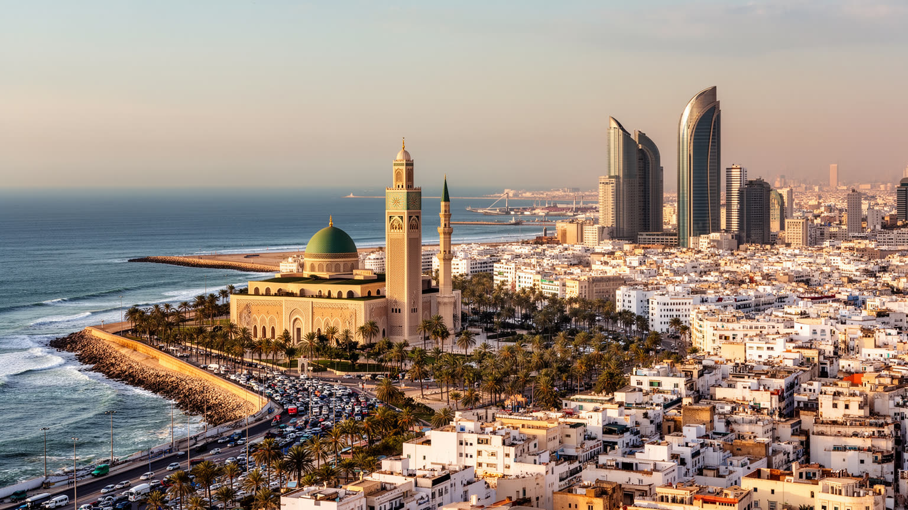
🇲🇦 モロッコ / カサブランカ＝セタット地方 / World City Atlas
大西洋に面するモロッコ最大都市です。港湾、金融、卸売、映画的な名声、巨大モスク、アールデコ街区、郊外住宅、移民の記憶、海岸の気候リスクが重なる、北アフリカ西端の実務都市です。
都市の骨格
カサブランカは首都ではありませんが、モロッコの商業、金融、港湾、広告、製造、不動産の重心を担います。モスクや旧市街の観光像だけでなく、通勤、住宅、港湾労働、移民、若者の就職難、サッカー、夜の海辺を抱える生活都市として読む必要があります。
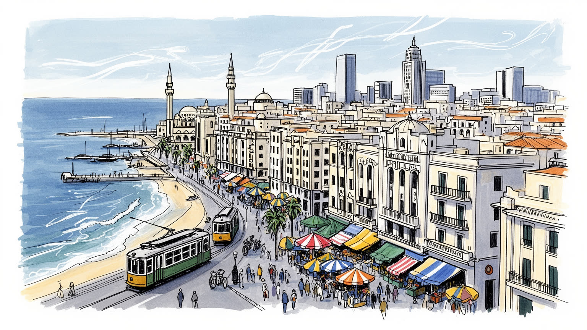
カサブランカは大西洋航路、欧州、サハラ以南アフリカ、中東を結ぶ商業の節点です。首都ラバトの政治決定を実務へ変え、港、空港、銀行、企業本社を通じてモロッコの外向き経済を支える海の玄関です。物流も要です。
金融、港湾、卸売、小売、不動産、縫製、食品、建設、配達、観光が雇用を作ります。正式なオフィス労働と露店、日雇い、家事労働が近接し、若者の失業、通勤費、住宅費が家計を強く揺らします。技能も問われます。
巨大なハサン2世モスク、旧メディナ、フランス語とアラビア語、ベルベル系の移住、映画の記憶、ラマダンの夜が重なります。宗教は記念物ではなく、職場、食卓、音楽、家族、海辺の散歩まで届く生活の時間でもあります。
旅行者はモスク、海岸、中央市場、ムハンマド5世広場、アールデコ建築を巡ります。住民は住宅、通勤、教育、物価、海岸の浸食、非公式労働と向き合い、子どもや高齢者も都市の速さの中で暮らします。買物も日常です。
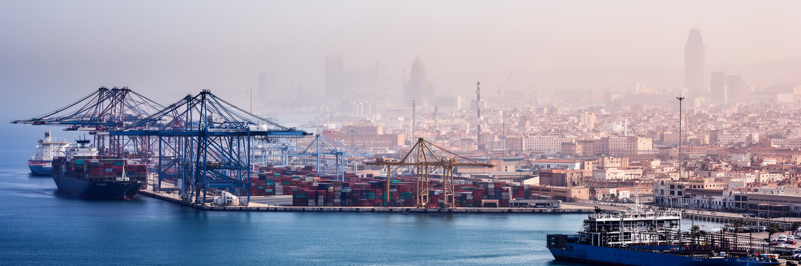
カサブランカの都市としての力は、大西洋に面した港から始まります。コンテナ、穀物、車両、建材、消費財、倉庫、通関、保険、銀行、道路輸送が港の周囲でつながり、モロッコの内陸市場を世界の海上物流へ押し出します。港は観光客が遠くから眺める背景ではなく、商店の在庫、工場の原料、パンの価格、輸出企業の納期を左右する実務の場所です。近年はタンジェ地中海港の存在感も大きいが、カサブランカ港は人口最大都市に接する商業港として、消費地に近い強みを持ち続けます。一方で、都心に近い港はトラック交通、騒音、排気、土地利用の衝突を生みます。岸壁の効率化だけでなく、鉄道接続、倉庫の配置、労働安全、周辺住民の環境を同時に考えなければ、港の利益は都市の負担として現れます。早朝のゲート、待機する運転手、税関書類、修理工場、港湾食堂を見ると、世界貿易は抽象的な航路ではなく、人が時間を背負う日常だと分かります。カサブランカを読むには、白い建物と海風の背後で動く貨物の流れを見逃せません。港が止まれば金融の数字も市場の棚も揺れます。大西洋の入口は、都市の雇用と物価を同時に動かす心臓です。さらに港の周辺には卸売市場、保険会社、小さな運送業者、食堂が集まり、貨物の利益が街角の商いへ流れます。その近さが、カサブランカをただの港湾施設ではなく都市そのものにしています。
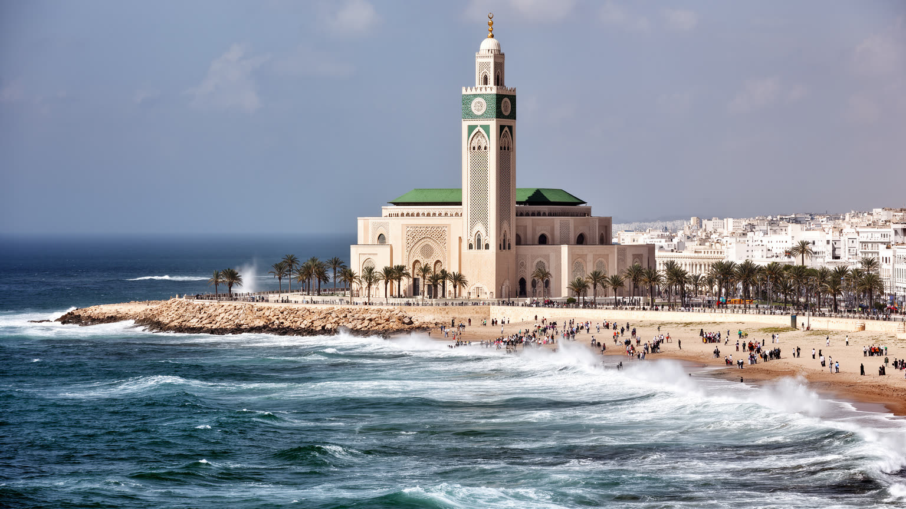
ハサン2世モスクは、カサブランカを一目で記憶させる巨大な建築です。大西洋に張り出す基壇、空へ伸びるミナレット、精密な装飾、広い広場は、信仰の場所であると同時に、国家が近代的な技術と伝統的な職人技を結びつけて見せる舞台でもあります。旅行者はそのスケールに圧倒されますが、都市にとって重要なのは、モスクが日常の時間にも開いていることです。礼拝、金曜の混雑、ラマダンの夜、家族の散歩、海辺で写真を撮る若者、タクシーや露店の仕事が周囲に重なります。祝祭の時期には慈善、贈り物、夜の食卓、子どもの衣装も街を動かします。巨大建築は誇りを作る一方、建設費、周辺の土地利用、海風による維持管理、観光と祈りの距離感も問います。信仰を観光資源として消費しすぎれば、祈りの場は浅く見えてしまいます。反対に、宗教施設を生活の中心として見ると、カサブランカのイスラムは記念物ではなく、働く人の休み、家族の集まり、慈善、時間感覚に深く関わっていることが分かります。海を背にしたモスクは、この都市が商業と信仰、国家の威信と市民の日常を同じ場所で折り合わせる姿を示します。大西洋の波音は、建築の荘厳さを外へ広げると同時に、祈る人を都市のざわめきから少し離します。カサブランカの象徴は、遠景だけでなく広場を歩く足音の中にあります。周辺の歩行空間が丁寧に保たれるほど、祈りと散策は対立せず、都市の共有財産として機能します。
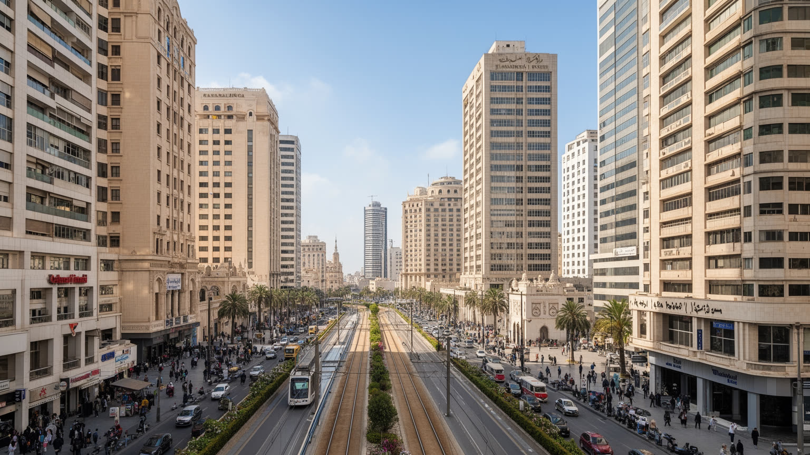
カサブランカはモロッコの経済首都として、銀行、保険、証券、通信、広告、コンサルティング、不動産、航空、商社、スタートアップを集めます。ラバトが政治の中心であるのに対し、カサブランカは契約、融資、採用、物流、見本市、企業本社の判断が毎日動く場所です。近代的なオフィス街や再開発地区は、モロッコ企業が西アフリカや欧州と結ぶ野心を映しますが、その足元では通勤する事務職、警備員、清掃員、配達員、カフェの店員が同じ時間表を支えています。金融都市としての顔は、数字の大きさだけでは測れません。若い大卒者が安定した仕事を得られるか、女性が安全に通勤できるか、中小企業が資金へ届くか、フランス語、アラビア語、英語の技能が階層差を広げないかが、都市の実力を決めます。オフィスの新しさは目立ちますが、家賃の上昇、渋滞、中心部の歩きにくさ、郊外からの長い移動も同時に増えます。新聞、テレビ、広告会社、SNS運用の仕事は、商業都市の空気を全国へ伝えます。カサブランカの業務地区を読むには、ガラスの塔と古い商店街、会議室と路面電車、国際金融と家族経営の小商いを一緒に見る必要があります。資本は高層ビルに集まりますが、都市の信頼は請求書を処理する人、朝の交通を耐える人、小さな店を続ける人の手にも宿ります。景気の変化は、企業決算だけでなく、昼食の客数や配達の注文にも早く表れます。
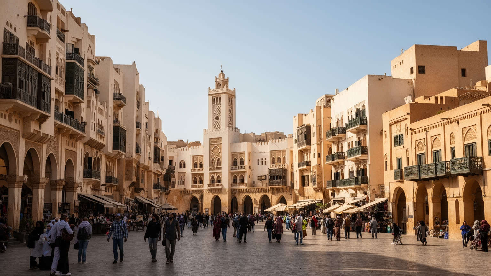
カサブランカの中心部には、旧メディナ、ムハンマド5世広場、アールデコやネオムーア様式の建物、近代的な大通りが近接しています。フェズやマラケシュのような古都の厚い観光イメージとは違い、カサブランカの歴史は港湾拡張、フランス保護領期の都市計画、商業資本、移住者の流入によって急速に形づくられました。白いファサード、曲線のバルコニー、映画館、ホテル、集合住宅は、近代都市の夢と植民地支配の不均衡を同時に残しています。旧メディナでは小さな店、住宅、修理、食料品、礼拝、観光客の通り道が混ざり、古い路地は生活の密度を保ちます。近くの商店街やモールは、伝統的な買い物と現代的な消費を同じ中心部に並べます。歴史的建築の保存は、写真映えする外観だけでは足りません。住む人の家賃、老朽化した設備、商店の継続、歩道の安全、交通の整理が伴わなければ、中心部は記念物と貧困の対比になってしまいます。カサブランカの魅力は、完成された古都ではなく、近代化の速度と日常の商いがぶつかる未完成さにあります。アールデコの壁面を見上げたあと、路地のパン屋や修理店へ目を移すと、都市の歴史が観光の装飾ではなく、働く建物として残っていることが分かります。白い街の美しさは、生活が続く時に最も強くなります。建物の手入れを担う職人や住民の負担を見れば、景観保存は文化政策であると同時に住宅政策でもあります。
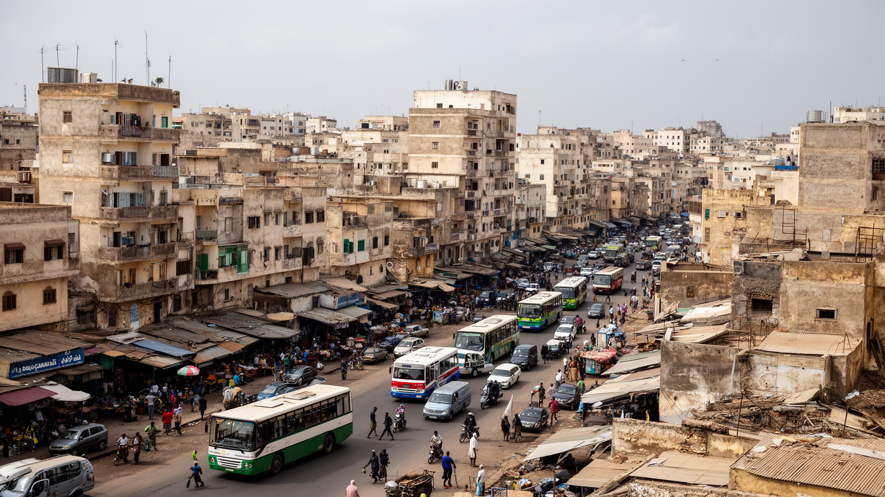
カサブランカの暮らしは、経済首都の華やかさだけでは説明できません。港、工場、オフィス、商店、建設現場、家庭内労働、配達、警備、清掃が雇用を生む一方、住宅費、通勤時間、若者の失業、非公式労働は多くの家計を圧迫します。市内と周辺には高級住宅、古い集合住宅、再開発地区、社会住宅、自己増築された住宅地が並び、どこに住めるかが仕事、学校、医療、余暇へのアクセスを決めます。郊外から中心部へ通う人にとって、バス、タクシー、路面電車、徒歩の組み合わせは毎日の負担です。住宅政策はスラムをなくす標語だけでなく、移転先の仕事への距離、家賃の支払い、近所づきあい、女性や子どもの安全、公共施設の近さを考える必要があります。高齢者には診療所、段差、年金、家族の支えが重く、子どもには学校の質と通学路の安全が将来を左右します。中心部の地価が上がれば、便利な場所に住む権利はますます狭くなります。カサブランカの社会問題は都市の外れに隠れているのではなく、オフィス街を掃除する人、港で荷を扱う人、カフェで働く人の通勤路として中心部と結びついています。街の活力は、働く人が家へ帰る時間と費用をどれだけ抑えられるかにも左右されます。住宅と労働を一緒に見ると、カサブランカは成功した商業都市であると同時に、生活の公平を試される都市でもあります。近所の市場、学校、診療所が近いかどうかは、賃金と同じくらい暮らしを左右します。
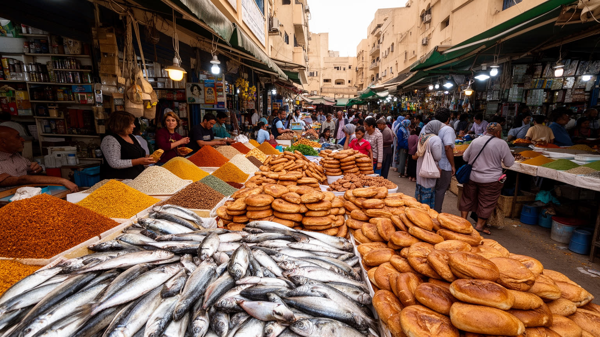
カサブランカの食は、海、内陸農業、移住者、労働時間、カフェ文化が混ざってできています。中央市場や近隣のスークでは魚、野菜、果物、オリーブ、香辛料、パン、肉、花が並び、レストラン、家庭、屋台、ホテルの台所へ流れます。港町であることは魚介の豊かさだけでなく、早朝の仕入れ、冷蔵物流、清掃、交渉、輸入品の価格にも表れます。タジン、クスクス、ハリラ、焼き魚、サンドイッチ、ミントティー、カフェの朝食は、観光客の味覚である前に、働く人の休憩と家族の時間を支える食です。市場は活気ある風景ですが、店主の長時間労働、食品価格の変動、衛生規制、再開発による家賃上昇、女性の買い物や働き方も見せます。カフェは男性中心の公共空間として語られることもありますが、近年は若者、学生、仕事の打ち合わせ、家族の外食も入り込み、都市の社交が変わっています。食を通じて見るカサブランカは、豪華なレストランだけの街ではなく、忙しい通勤者がパンを買い、港から魚が届き、ラマダンの夕方に家へ急ぐ生活都市です。皿の上には、海辺の地理、農村からの供給、都市の所得差、宗教の時間が一緒に乗っています。市場の匂いとカフェのざわめきは、経済首都の硬い顔を日常へ戻す力を持っています。食べる場所を追うと、都市の階層と温かさが同時に見えます。夕方の買い物かごには、家族の予算と季節の記憶が入っています。
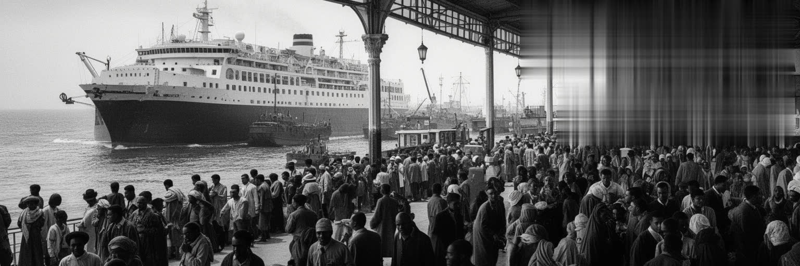
カサブランカは、モロッコ国内外の移動を受け止めてきた都市です。農村や小都市から仕事を求める人が集まり、港や空港を通じて欧州、湾岸、北米、サハラ以南アフリカへ向かう人の記憶も重なります。都市の急成長は移住者の労働力によって支えられ、建設、家事、商店、工場、港湾、飲食、交通の現場には地方から来た家族の生活設計が刻まれています。カサブランカにはかつて大きなユダヤ系コミュニティもあり、シナゴーグ、墓地、学校、商業の記憶は、現在のイスラム都市の中に多層的な過去を残します。映画の名で世界に知られる都市像も、実際には亡命、戦時、通過、港町の想像が作った外部からのイメージです。移民の街を読むには、出発する人だけでなく、残る家族、送金、帰省、海外経験を持つ若者、言語の混ざり方を見る必要があります。近年はサハラ以南から北へ向かう移民や学生も都市に現れ、モロッコ社会の多様性を広げる一方、法的地位、差別、住まい、仕事の不安も生みます。カサブランカの記憶は、港を出る船や飛行機だけでなく、帰ってきた人が建てる家、海外からの電話、家族が待つ夕食にも宿ります。移動は都市を開く力であり、同時に別れと不安を伴う生活の現実です。この街の国際性は、オフィスの英語だけでなく、家族史の中にあります。駅や港の待合室には、出発への期待と生活を変える不安が同じ椅子に座っています。
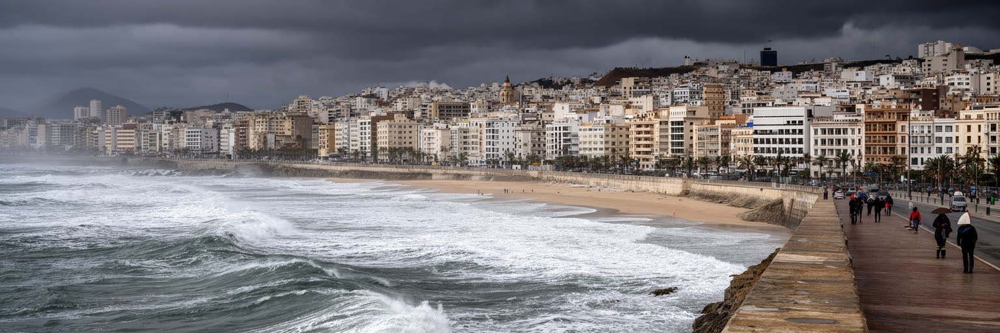
カサブランカの大西洋岸は、都市に開放感とリスクを同時にもたらします。コーニッシュの散歩、海辺のカフェ、モスクの遠景、浜辺の余暇は都市の大きな魅力で、若者のサッカー、ジョギング、夜の音楽、家族の外出も海風の中で重なります。強い波、海岸侵食、高潮、排水、下水、海面上昇、沿岸開発の圧力も無視できません。港湾施設、海岸道路、高級住宅、観光施設、低地のインフラが海に近いほど、気候変動の影響は都市経済へ直接届きます。海辺の再開発は投資と景観を生みますが、公共のアクセスを狭めたり、砂浜や生態系を削ったりすれば、海は一部の人だけの資産になってしまいます。気候リスクは未来の抽象的な危機ではありません。豪雨の排水不良、道路冠水、老朽化した下水、暑さ、沿岸の劣化は、すでに住民の移動や健康、観光の印象に関わります。カサブランカが海辺の都市であり続けるには、防波、排水、緑地、公共交通、建築規制、低所得地区の防災を一体で考える必要があります。美しい海岸を守ることは、写真の背景を守ることではなく、住民が安心して散歩し、働き、通学し、海の近くで暮らせる条件を守ることです。大西洋の風は都市の魅力を運びますが、その風が強くなる時、どの地区が先に傷つくのかを見ることが公平な都市計画の出発点になります。砂浜の管理や排水溝の清掃のような地味な作業も、沿岸都市の信頼を支える防災です。
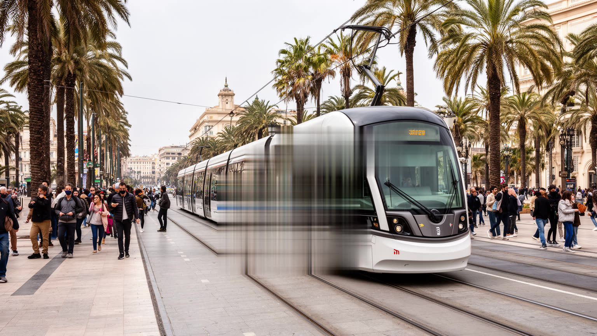
カサブランカの日常は移動の問題と切り離せません。広がる市街、郊外住宅、業務地区、学校、港、工場を結ぶには、徒歩、バス、タクシー、車、路面電車を組み合わせる必要があります。路面電車は、渋滞に悩む都市へ比較的読みやすい公共交通の軸を作り、学生、事務職、買い物客、観光客を中心部へ運びます。駅前の歩道や乗り換えが整えば、車を持たない人の機会は広がります。しかし、路面電車だけで都市全体の不平等が解けるわけではありません。停留所から遠い地区、夜間の安全、バスとの接続、運賃、混雑、障害のある人の使いやすさが、実際の便利さを決めます。自動車中心の道路は、歩行者や露店、小さな店、子どもにとって厳しい空間になりがちです。カサブランカの移動を読むには、交通機関の種類だけでなく、家から職場まで何分かかり、いくら払い、どの道を歩き、誰が安全に感じるのかを見る必要があります。経済首都の効率は、会議に間に合う管理職だけでなく、朝早く清掃や販売へ向かう人の時間にも支えられています。路面電車の車窓からは、近代的なオフィス、古い住宅、広場、学校、建設現場が連続して見えます。その連続性こそ、都市を分断せずにつなぎ直す交通の価値です。移動の公平は、カサブランカの未来の暮らしやすさを測る重要な物差しです。歩道の影や横断のしやすさも、公共交通の一部として考えられるべきです。
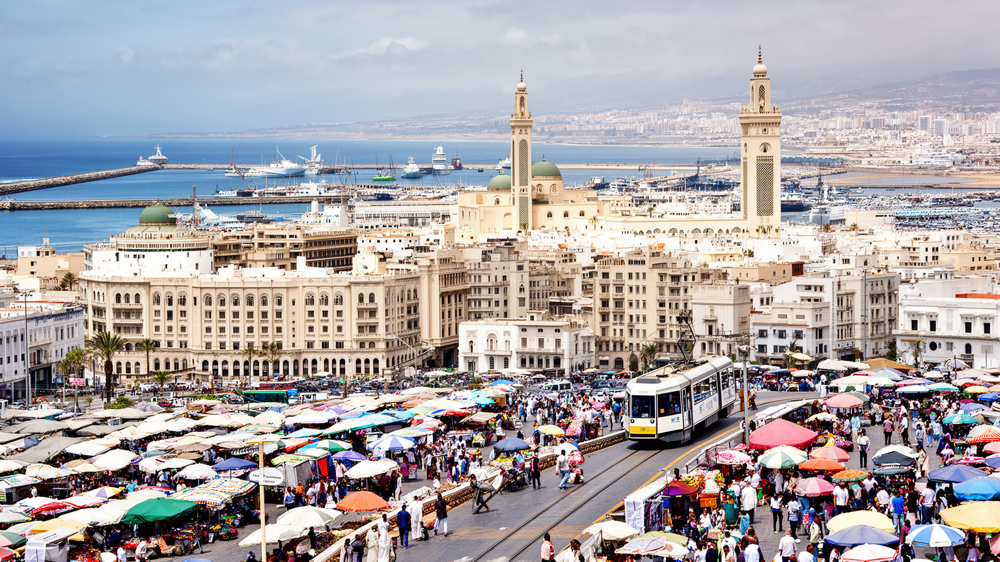
カサブランカを一つの印象に閉じ込めることはできません。モロッコ最大の商業都市であり、大西洋港湾であり、銀行と広告の中心であり、巨大なモスクを持つ信仰の都市であり、アールデコ建築と旧メディナが隣り合う近代都市でもあります。観光客には映画的な名前や海辺の景色が先に届きますが、住民にとっての都市は、通勤、家賃、就職、物価、学校、祈り、食市場、家族の送金、海岸の危うさとして現れます。首都ではありませんからこそ、カサブランカの力は政治の象徴より実務にあります。港で荷が動き、銀行が融資し、路面電車が人を運び、市場が食を回し、郊外から働く人が集まることで、国の経済は毎日形になります。その一方で、経済成長がすべての住民に安定を届けているわけではありません。中心部の再開発、住宅の遠さ、非公式労働、若者の不安、海岸リスクは、この都市の明るい顔に影を落とします。カサブランカを読むことは、白い街並みを美しい背景として消費するのではなく、商業、信仰、移住、労働、気候、記憶を同じ地図に置くことです。大西洋の風は外へ開く野心を運びますが、都市の価値は、そこで暮らす人が普通の一日をどれだけ安心して送れるかにもあります。矛盾を抱えたまま動く実務の厚みが、この街を北アフリカ西端の重要な世界都市にしています。その読解は、海辺の一枚の写真から始まり、通勤の疲れや市場の会話へ進むほど深くなります。